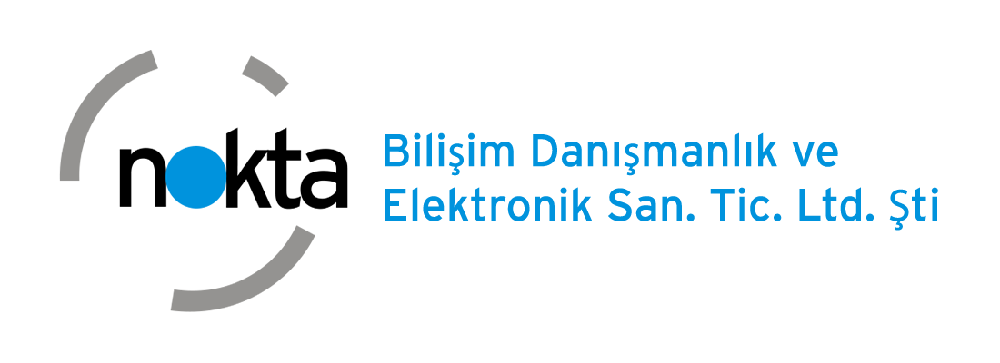

Uzaktan Destek — ekran taslakları
Tıklanabilir statik taslaklar. Her sayfanın üstündeki kesikli çubuk ürünün parçası değildir; durumlar (boş, yükleniyor, hata…) ve tema arasında geçiş içindir.

Tıklanabilir statik taslaklar. Her sayfanın üstündeki kesikli çubuk ürünün parçası değildir; durumlar (boş, yükleniyor, hata…) ve tema arasında geçiş içindir.